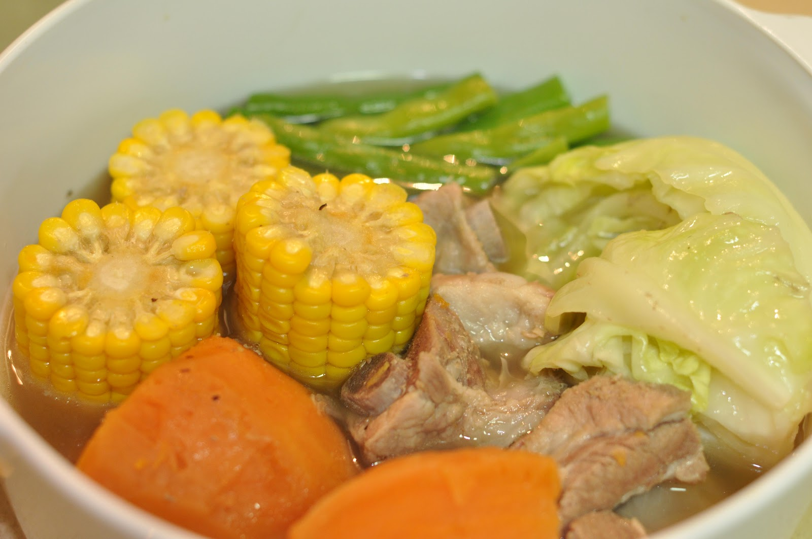
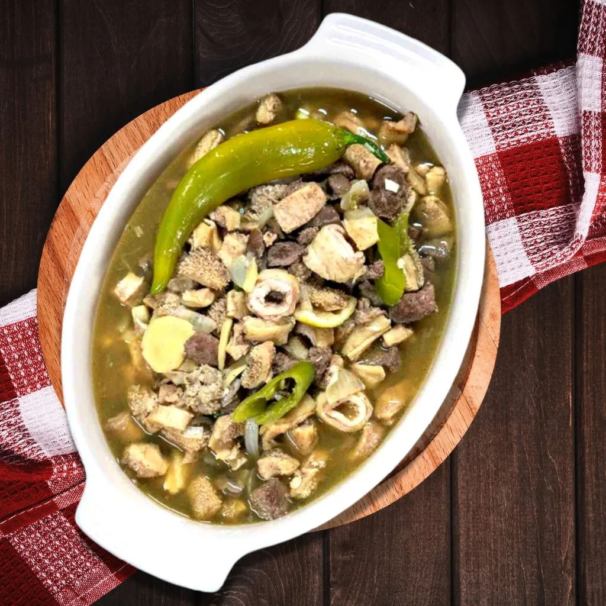
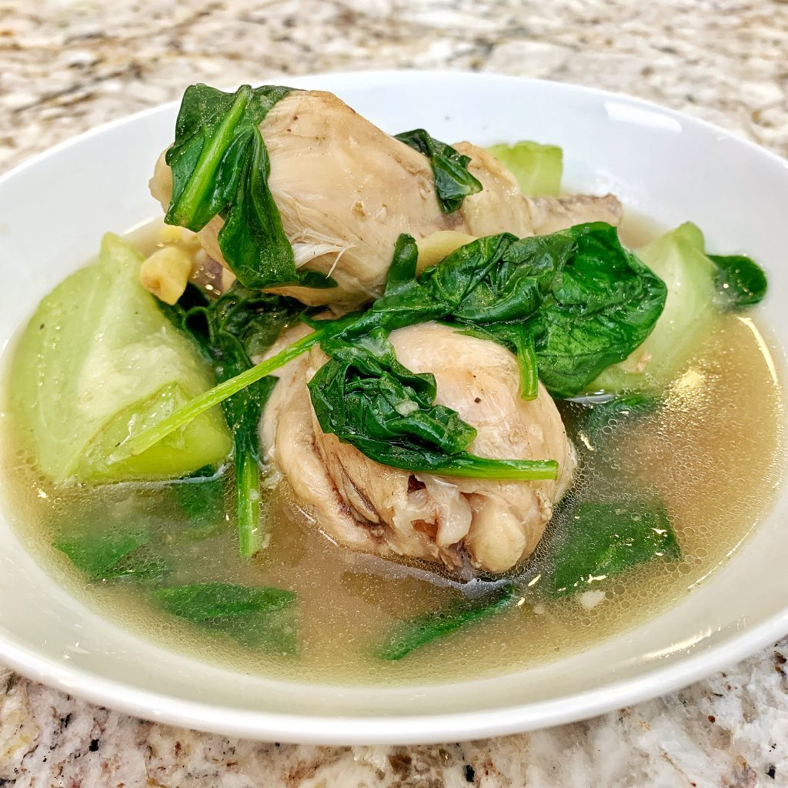
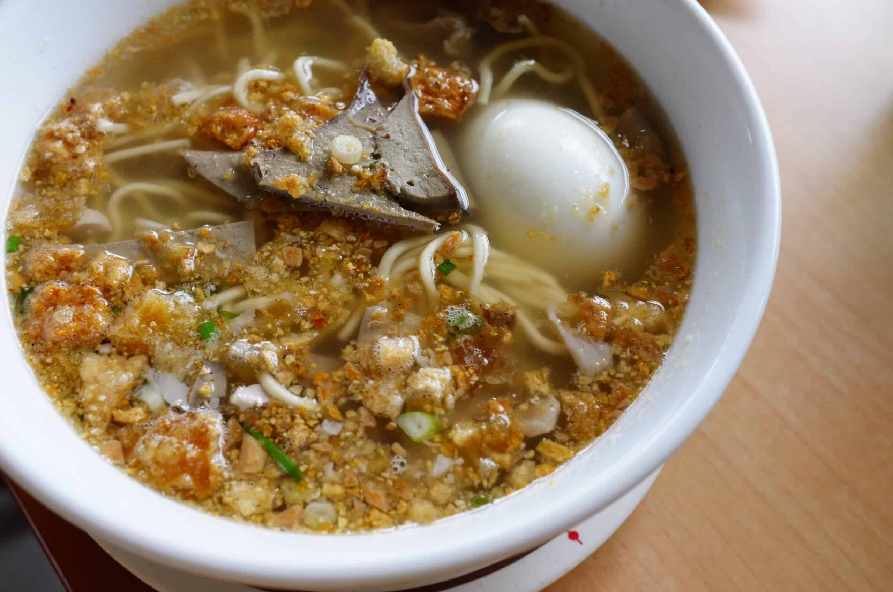
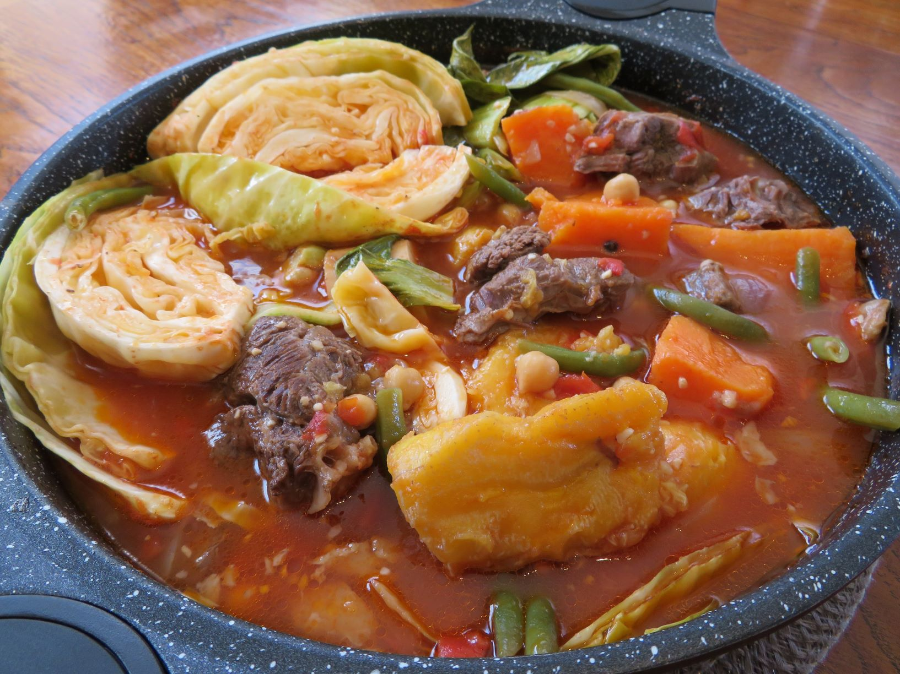

Sinigang

Ingredients
- 500g pork belly (or shrimp, beef, or fish)
- 1 medium onion, quartered
- 2 tomatoes, quartered
- 5 cups water
- 1 pack tamarind mix (or fresh tamarind if available)
- 1 radish (labanos), sliced
- 1 eggplant, sliced
- 1 bunch kangkong (water spinach)
- 10 pieces sitaw (long beans), cut into 2-inch pieces
- 2 green chili peppers (optional)
- Salt or fish sauce to taste
Instructions
- Boil pork in water with onion and tomatoes until tender.
- Add tamarind mix and stir until well combined.
- Add radish, eggplant, sitaw, and green chili peppers. Cook until vegetables are tender.
- Add kangkong leaves and let simmer for 1-2 minutes.
- Season with salt or fish sauce to taste.
Bulalo

Ingredients
- 1 kg beef shank (with bone marrow)
- 10 cups water
- 1 onion, quartered
- 2-3 ears of corn, cut into pieces
- 1 medium cabbage, quartered
- 2-3 potatoes, peeled and quartered
- 1 bunch of pechay (bok choy)
- Salt and pepper to taste
Instructions
- Boil beef shank in water with onion for about 2-3 hours, or until tender.
- Add corn and potatoes; cook until potatoes are tender.
- Add cabbage and pechay; cook for another 2-3 minutes.
- Season with salt and pepper to taste.
Nilaga

Ingredients
- 500g beef or pork (cut into chunks)
- 10 cups water
- 1 onion, quartered
- 2-3 potatoes, peeled and quartered
- 1-2 ears of corn, cut into pieces
- 1 medium cabbage, quartered
- 1 bunch of pechay (bok choy)
- Salt and pepper to taste
Instructions
- Boil beef or pork in water with onion for about 1-2 hours, or until tender.
- Add potatoes and corn; cook until potatoes are tender.
- Add cabbage and pechay; simmer for another 2-3 minutes.
- Season with salt and pepper to taste.
Papaitan

Ingredients
- 500g beef innards (tripe, liver, heart, etc.), cleaned and cut into pieces
- 8 cups water
- 1 onion, chopped
- 3 cloves garlic, minced
- 1 thumb-sized ginger, sliced
- 2-3 tablespoons bile (from the innards or bottled)
- 2-3 green chili peppers (siling pangsigang)
- Salt and pepper to taste
Instructions
- Boil beef innards in water until tender (about 1-2 hours).
- In a separate pan, sauté onion, garlic, and ginger until fragrant.
- Add the sautéed mixture to the boiling innards.
- Stir in bile, chili peppers, salt, and pepper. Adjust bitterness to taste.
- Simmer for another 10-15 minutes.
Tinola

Ingredients
- 500g chicken (cut into pieces)
- 6 cups water
- 1 onion, quartered
- 1 thumb-sized ginger, sliced
- 1 medium green papaya or chayote, peeled and sliced
- 1 bunch of spinach or malunggay (moringa leaves)
- 2-3 tablespoons fish sauce (patis)
- Salt and pepper to taste
Instructions
- In a pot, sauté onion and ginger until fragrant.
- Add chicken pieces and cook until lightly browned.
- Pour in water and bring to a boil; simmer until chicken is cooked (about 20-30 minutes).
- Add papaya or chayote; cook until tender.
- Stir in spinach or malunggay; season with fish sauce, salt, and pepper.
Batchoy

Ingredients
- 200g pork (belly or shoulder), sliced
- 100g pork liver, sliced
- 1-2 cups egg noodles (miki)
- 5 cups pork broth (or water)
- 1 onion, chopped
- 2 cloves garlic, minced
- 1-2 tablespoons soy sauce
- 1 tablespoon fish sauce (patis)
- Chicharrón (crispy pork skin) for topping
- Spring onions, chopped, for garnish
- Raw egg (optional)
Instructions
- In a pot, sauté onion and garlic until fragrant.
- Add pork slices and cook until browned. Pour in broth and bring to a boil.
- Add liver and simmer until cooked.
- Stir in soy sauce and fish sauce.
- Cook egg noodles in a separate pot, then drain and add to the soup.
- Serve hot, topped with chicharrón, chopped spring onions, and a raw egg if desired.
Lomi

Ingredients
- 200g fresh egg noodles (lomi)
- 100g pork (chopped)
- 100g chicken (shredded, optional)
- 50g liver (sliced, optional)d
- 2 cups chicken broth (or water)
- 2-3 cloves garlic, minced
onion, chopped
carrot, julienned
- 2-3 tablespoons soy sauce
1 tablespoon cornstarch (dissolved in water)
Salt and pepper to taste
Spring onions, chopped, for garnish
Calamansi or lemon, for serving
Instructions
- In a pot, sauté garlic and onion until fragrant.
- Add pork and liver; cook until browned.
- Pour in broth and bring to a boil.
- Add the fresh egg noodles and carrots; simmer for about 5-7 minutes.
- Stir in soy sauce and dissolved cornstarch to thicken the soup.
- Season with salt and pepper to taste. Serve hot, garnished with spring onions and a side of calamansi.
Pochero

Ingredients
- 1 kg beef shank or brisket
- 1 onion, quartered
- 3 cloves garlic, minced
- 1 tomato, chopped
- 2-3 medium potatoes, peeled and quartered
- 1-2 carrots, sliced
- 1 banana (saba), cut into chunks
- 1 cup green beans (sitaw)
- 4-6 cups beef broth or water
- 2-3 tbsp fish sauce (patis)
- Salt and pepper to taste
- Optional: cabbage or bok choy
Instructions
- Sauté garlic, onion, and tomato in a pot until fragrant.
- Add beef and cook until browned.
- Pour in broth or water; bring to a boil. Simmer until beef is tender (about 1.5-2 hours).
- Add potatoes, carrots, and banana; cook until tender.
- Stir in green beans and any optional vegetables; cook for another 5-10 minutes.
- Season with fish sauce, salt, and pepper to taste.
- Serve hot with rice. Enjoy!